John Yandell-Modern Tennis Forehand-Where Are We Now-Part1¶
Modern Tennis:
Where Are We Now?
\ What Have We Learned?\ The Forehand Part 1
John Yandell
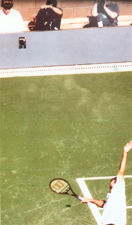
That's me upper left, looking through my goggles at Pete Sampras in high speed video at the US Open in 1997.
In 1997, we did our first high speed filming of professional tennis. And we have continued to film the top players ever since. It's now been 20 years.
So what have we learned? How has the game evolved technically? And what are the implications for not just elite players, but for the rest of the tennis playing world? This new series presents a summary of that work, starting this month and next with the forehand.
In 1997, when I sat on the sideline with a high speed camera in the first year of Arthur Ashe Stadium, Andre Agassi and Pete Sampras were still at the top of the pro game. Tennis had seen two huge changes---the transition to graphite rackets and to predominant hard court play with two Grand Slams, Australia and the US, going from grass to hard courts. The continental grip was a thing of the past. The power baseline game was becoming much more widespread, but players including Sampras, Pat Rafter, Tim Henman, and Greg Rusedski were still winning playing serve and volley.
Most players still had conservative grips by today's standards---not continental certainly, but eastern or modified eastern or mild semi-westerns. Off the ground, hard relatively flat winners were predominant at least on hard courts.
That same filming was the first work ever to measure actual spin rates. Sampras and Agassi were generating a little less than 2000rpm of spin on their forehands. link Sergi Bruguera was generating spin levels over 3000rpm, but that was seen as something that worked only on clay. Rafael Nadal was 11 years old.
Over the next 10 years the game evolved gradually until a new style of forehand became the norm. Poly strings had started to predominate. The new strings combined with later generation graphite rackets allowed players to morph the extreme forehand elements together, increase velocity, and increase spin levels to equal and surpass Bruguera---not just on clay but on all surfaces.
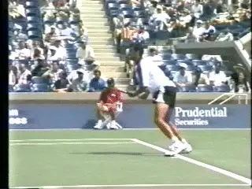
Bruguera's spin levels seemed like an anomaly in 1997.
We saw in a previous article (link) that classic players of past eras used most of these elements now associated with the modern forehand---open stance, leaping with both feet in the air, windshield wiper finishes, reverse over the head finishes, straight arm forehands, swinging volleys.
But by the time Nadal won his fourth straight French Open title in 2008, the more extreme elements had become the norm on the forehand. In many ways it appeared there was now an increasing disconnect on the forehand between the highest levels of tennis and the recreational game.
The question became then what can we learn from these elite players' forehands---if anything? Were the differences so fundamental that players were better off with more purely classical models?
Because there is so little good film of the strokes of the greats from Tilden to Budge to Kramer to Gonzales to Laver (to see the best collection anywhere in our Stroke Archive, link) it would be hard to create great normative models from the previous with real confidence. Perhaps the best source anywhere for understanding the classical game is our incredible series from Welby Van Horn. link
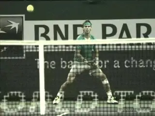
What can the average player learn from the evolution of the modern forehand?
But what about the great modern players? I believe that certain core fundamentals in the current game still apply across all levels. In fact some of the most foundational elements are actually stronger with today's top players and these players are actually better models in some ways for all players. And because of our high speed filming, these model elements can be clearly identified across the entire range of elite pros.
Many of the current pro elements of course don't apply, despite the hopes and delusions of many club players. The important question is which ones do?And how do we separate foundational from advanced? This is what I have tried to do in my series on the Ultimate Fundamentals link
And elsewhere in the Advanced Tennis section I have worked through almost the entire pro game in extended detail. There is a lot of material. link There is also groundbreaking biomechanical research from Brian Gordon that brings even greater understanding to issues that were before matters of interpretation and opinion. link
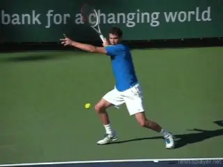
What applications of pro elements are delusional and which are possible?
So in this article let's summarize what and how we can learn from the pros forehands. But it's important to understand I am not saying "play like the pros." The players that can play like the pros are the pros. We aren't them. But we can still be inspired by the top players and develop tremendous technical foundations using core elements as models.
Split Step
Let's start with the split step. As Tim Mayotte has recently written (link) a great split step separates players even at the pro level. Roger Federer is the ultimate example.
He starts to split usually slightly before his opponent even makes contact and is at the top of his split when the ball comes off the strings. He lands in a wide base with great knee bend, coiling his legs for smooth yet amazingly explosive movement toward the ball.
The average player, very unfortunately, is often still waiting in some version of a ready position---or even casually standing--when the ball bounces on his side. Even in low level tennis this is technically disastrous.
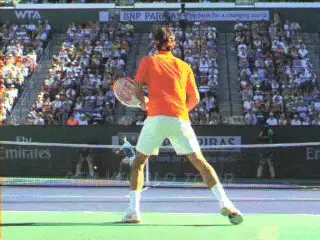
Federer's split step perfection---starting before contact, the top of the split at the hit and a balanced landing in a wide base.
The time between the hits in club tennis is usually a little more than a second, at most a second and a half. Yet players waste half or more of that time. This makes executing a fundamentally sound groundstroke impossible.
You may not time your split like Roger. But it only takes focus and intention to begin to split at the opponent's hit.
You may not have the strength or flexibility to split in a base that is twice your shoulder width with substantial knee bend like Federer---it fact you probably or undoubtedly don't. But you have to develop a feel for a width and depth in your own split that is comfortable for you and that lets you immediately initiate the preparation on landing.
Grips
In pro tennis the grips range from eastern with most of the hand behind the handle like Federer to full western with most of the hand under the handle like Jack Sock---and everything in between.
The biggest factor to understand in looking at grips is contact height. In pro tennis, the ball is regularly played at shoulder height or higher. Although players like Djokovic who are partially under the handle can certainly take the ball early at lower heights, the more extreme grips are far better suited to heavy high bouncing balls that are common in the pro game.
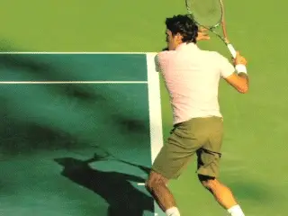
The modern game includes the full range of grips from Eastern to Full Western.
So unless you are an elite junior, a college player, or a young athletic open player, a more conservative grip is probably far better suited to the type of ball you hit. You may not split like Roger, but a grip like Roger Federer is most likely ideal.
Federer can elevate for high balls no doubt. But he prefers contact heights from his waist to mid chest. In the pro game this requires the super human ability to play 90mph balls with heavy spin on the rise.
For the huge majority of all players, that same contact height matches the top of the bounce on most incoming balls. You don't have to hit on the rise. You can also hit slightly on the way down. That makes the Eastern a great choice, or at most a mild semi-western.
Preparation
No matter what you may have heard about delaying preparation and "stalking" the ball by keeping the racket in front of your body, it's unarguable that good preparation begins instantaneously after landing the split---or sometimes even in the air. The high speed footage is conclusive. Preparation starts immediately with a unitary body turn involving the feet torso and racket.
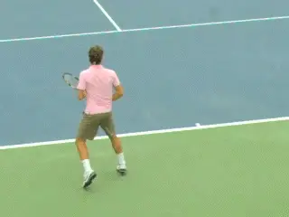
The start of the body turn with the racket staying in front of the torso.
The other end of the advice spectrum from "stalking" is to immediately "take your racket back," with independent motion of the arm. Don't do it. Instead start the unitary body turn immediately after the split.
In the initial phase of the turn, the shoulders turn about 45 degrees. Depending on where the player is and where the ball is coming, there can be various combinations of first steps happening as the body turns.
There could be a simple pivot, an out step, a backward step, a shuffle step or a cross step. David Bailey has outlined them in his phenomenal footwork articles link But the end result is that the right foot usually turns to point basically toward the right sideline. The left leg, left foot and hips also pivot and come forward, so the foot positioning is offset with the left foot in front of the right.
The opposite hand stays on the racket and the racket moves naturally with the body turn although the hands may start to rise somewhat and the angle of the face of the racket can change somewhat. These changes tend to be individual. But regardless of that, in this first phase the racket is still in front of the torso and moving back mainly as a natural consequence of the body rotation.
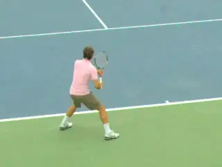
The hands can separate at slightly different times and the opposite arm can be straight or slightly bent. The keys are in the shoulder, hip and leg rotations.
Full Turn
As the turn progresses, the hands separate and the left hand and arm move to point across the body, basically perpendicular to the sideline. The shoulders and hips continue to rotate until the shoulders are at least 90 degrees to the net or usually more.
Some players, like Djokovic, hold on longer with the opposite hand. The left arm stretch starts a little later and the arm doesn't always straighten out completely. But most players are going to get a better turn by focusing on the straight arm and probably a little sooner separation of the hands.
As the player completes the turn, the weight is shifting to the outside right leg and the knees are coiling. The left leg and left foot move forward and are 3 feet or more closer to the baseline. The left heel is usually partially elevated with the weight in the left leg mainly on the balls of the foot. The posture is upright with the spine close to 90 degrees to the court, tilted only slightly to the right.
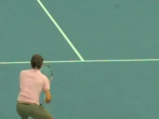
The ATP backswing---more compact and more powerful.
Backswing
Since Brian Gordon delineated the types of backswings on the forehand with his distinction between the so-called WTA and ATP backswings, the topic has become the rage on the internet and is the distinction is widely accepted by most knowledgeable coaches. link
His research showed the ATP backswing was both more compact and more powerful, in effect "turbo charging" the forehand through increased stretching of the shoulder muscles. Players like Roger Federer and Grigor Dimitrov are the cleanest models.
In the pure form of this backswing the hand moves upward on a diagonal and slightly to the outside or away from the player during the completion of the turn--with the hand reaching shoulder height or slightly below. The racket face is slightly closed, in what Rick Macci, who was heavily influenced in his professional collaboration with Brian, calls the "tap the dog" position. link
From this backswing position, the racket moves down with the hitting hand staying the player's right side. This is in comparison to the so-called WTA backswing of a player like Madison Keys in which the hand moves backward behind the plane of the body. link
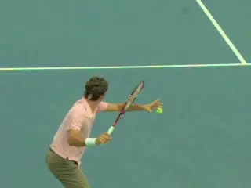
From the outside backswing position, the hand, arm and racket rotate backward from the shoulder as the they move downward preparing for the forward swing.
Central in this movement is what Brian and Rick call the "flip." This is the backward or external rotation of the hitting arm and racket from the top of the backswing as they move down and set up the hitting arm position for the forward swing. This flip sets up the hitting arm for maximum explosion from the shoulder in the movement toward contact.
Another huge internet teaching fad has been the emphasis on the further closing of the racket face as the hand, arm and racket move downward and into the flip. It is true that often the racket face continues to turn downward until it is fully parallel to the court, the so-called "pat the dog."
Many self-styled experts have advocated consciously recreating this position---or even creating a backswing based on "laying the racket face flat on a table" and starting the forward swing from that position. In truth, when it happens this more extreme down turn it is an automatic consequence of the move through the flip.
It is situational and tends to happen most on lower balls and far less on higher balls. And many great, great forehands---for example Juan Martin Delpotro's forehand have little to no racket face closure. (For an article on the Myth of the Dog Pat link.)
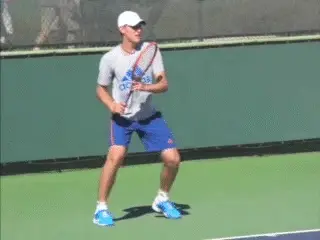
Is there an acceleration benefit in pointing the tip of the racket more toward the opponent?
So don't think about patting the dog! It will destroy the timing of the completion of the flip and diminish the creation of energy and the natural and automatic benefits of the outside backswing by putting a mechanical muscle movement into the middle of a critical part of the swing. (For an example of the negative effects of trying to pat the dog in the forehand a good club player, link.)
Accelerator?
Another interesting element in the backswing is what happens to the tip of the racket. As the hand and racket move up many top players turn the tip of the racket to point partially or even totally at the opponent. Dominick Thiem does that and so do Djokovic and Sock to a lesser degree.
Why? We know that the backward arm rotation moving into the flip is part of the turbocharge effect in the swing from the ATP backswing. If the tip of the racket is pointing forward, possibly this effect is increased. That hypothesis is shared by Brian Gordon.
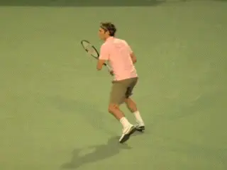
Federer tilts the racket tip around 30 degrees forward, but Nadal points it straight upward or close.
But how critical is it? Federer has the tip pointing somewhat toward the opponent. So does Alexander Zverev. They have two of the two of the best forehands there are. But Rafa Nadal actually does the opposite, pointing the racket tip almost directly upward.
So pointing the tip is not something fundamental to a great forehand. And it adds complexity to the movement and takes somewhat more time. It's not something that the average player should try to build in to underlying fundamentals. If you have or develop a rock solid technical motion---ok then sure try the experiment. But if you have a rock solid technical forehand, you might wonder why.
The fact is the precise size and shape of the backswing varies tremendously among great players. Many years ago I dove all the way into the question and took a detailed looked at the players then at the top of the game from Pete Sampras to Andre Agassi to Gustavo Kuerten to Marat Safin and others. link
I found different hand heights, different racket tip heights, different racket tip angles, different shapes in the racket paths, different distances from the torso among other things. You can saw the same thing about the current top players.
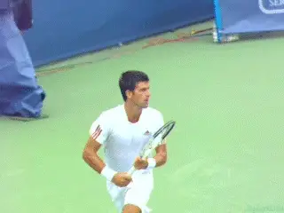
Compare the racket movement, racket tip angle and backward arm rotation for Djokovic and Sock.
After tilting the tip forward Djokovic continues his backward external arm rotation until his racket face literally is parallel to the baseline. DelPotro takes the racket up with the face slightly open and then points the racket tip backward with no forward tilt involved.
The one commonality I found was that the racket hand tended to stay on the right side---what is now recognized as a commonality in the so-called ATP forehand. My conclusion was that the simpler the better and at the time choose Agassi as a model because of the simplicity and relative compactness of the motion. Not dissimilar to Roger Federer today although Roger is probably even a better model because his hand position stays lower, usually below shoulder level.
A final point of confusion to look at on the compact backswing model. The difference in the position of the hand, versus the position of the racket as the backswing descends and moves into the forward swing.
As the animations of Agassi and Federer show, players with the ATP backswing and relatively mild grips show, the racket tip as well as the hand stay on the player's hitting side.
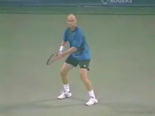
Compare the similar outside backswings of Andre Agassi and Roger Federer.
It's the hand position that's the important element here. Many players with grips further under the handle will actually point the racket tip behind them at the bottom of the backswing.
This is a function primarily of grip and the way the racket sits across the palm of the hand with extreme semi-western and western grips. The racket is at an angle across the palm and this angle can approach 90 degrees with a very extreme player like Sock. You see the same with Nadal and Djokovic.
This is very different than the milder grips of Agassi and Federer where most of the palm of the hand is behind the handle, basically parallel with the string bed. The key to evaluating the backswing is to look at the hand not the racket tip.
The angle of the racket tip isn't a problem. Conceivably it may take some small additional fraction of time for the racket head to get around to the contact. But the angle is a natural component and just because the racket points behind the torso it doesn't mean the hand went too far back or indicate that the player isn't using the more compact ATP style motion with his hand on his hitting side.
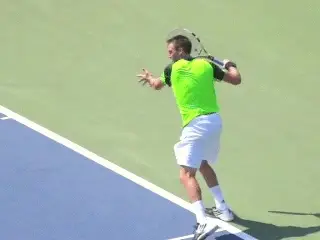
With extreme grips the hand can be on the hitting side, but the racket tip itself is angled behind the torso.
Stance
Now let's move onto another important misunderstood element: stance. There is widespread confusion about stances in pro tennis---and how they apply at the levels below. One mantra you hear is: "play open stance like the pros." This usually is interpreted to mean fully open stance, with both feet parallel to the baseline. You hear this from online gurus but also amazingly from experienced tour coaches.
The actuality is that pro players hit the vast majority of all forehands with semi-open stances. The feet aren't parallel to the baseline. A line across the toes is at an angle of 30 to 45 degrees to the baseline.
But if open is good isn't more open better? It's the opposite. If the feet stay parallel to the baseline it restricts the rotation of the hips, left leg and left foot. Players cannot coil and load as fully. In fact if you look at a pro player like Andy Murray, one of the problems in his forehand is that he uses more fully open stances and doesn't turn as fully as players like Nadal, Federer or Djokovic on balls where he could. link
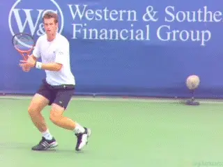
Fully open stance reduces coiling. Note the angle of Andy's shoulders and hips and the reduced left arm stretch.
Forward Torso Rotation
Beyond the coiling in the preparation phase, the semi open stance is critical in the modern forehand. This is because the shoulders rotate up to 180 degrees or sometimes even slightly more in the forward swing.
From the full coil with the shoulders turned to the net, the rear shoulder typically comes around until it is facing the net. The semi open alignment positions the left foot so this can happen freely.
So semi-open creates maximum coiling and allows for maximum uncoiling. These two factors are a primary source of the increases of forehand speeds up to 100mph or even higher and spin up to and exceeding 3000rpm.
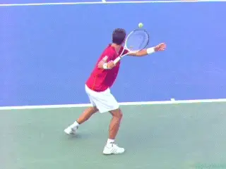
The back shoulder rotates around 180 degrees in the forward swing, finishing facing the net.
Neutral Stance
But there is another benefit to setting up the semi-open stance correctly. It also allows top players to step forward naturally and easily into neutral stances.
This happens relatively rarely in pro tennis---on lower bouncing and shorter balls. But is an easy transition from the semi-open set up, something more difficult and unnatural from the extreme fully open foot position with the left foot.
It was once believed that "stepping in" using a neutral--or what is sometimes called a square stance--was a major power source on the forehand, generating "linear" energy in the direction of the ball.
That has been completely replaced on the vast majority of pro forehands by the forces of torso rotation, which create "angular" energy. If stepping directly forward into the shot would generate more power, you would see the top players do it. They don't. The neutral step puts the front foot in the way of the forward rotation of the back shoulder, which is what maximizes racket speed, velocity and spin.
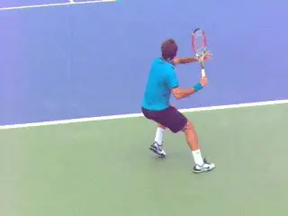
In pro tennis the semi-open set up allows an easy, natural transition to neutral stance or lower or shorter balls.
And now the question for the rest of us. Should we all try to rotate 180 degrees with the torso in the forward swing---just like the pros? That amount of rotation is common in elite junior tennis and college tennis. But is it realistic for us? No--and recreational players who try it often look awkward or comical.
It's not only the more extreme and more athletic movement that is far more difficult and as well more difficult to time. It's also related to contact height. Pro players in general play the ball at far more extreme contact heights with one or both feet fully in the air.
For the vast majority of players though, the neutral stance is applicable to the vast majority of balls. It also helps in another respect.
The step forward and across into a neutral stance insures a full body turn---and in fact is the best way for many players to feel and develop it. So many players tend to get the left side of the torso and left leg stuck---especially if they are laboring under the delusion that fully open stance is the magic key to a "modern" forehand.
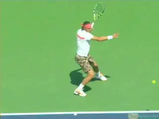
High contact goes hand in hand with full body rotation with both feet in the air.
In fact with lower level players, I usually prioritize a great turn with a either a solid semi-open stance or a neutral stance above the exact size or shape of the backswing---assuming it isn't gigantically huge. If the hand goes a little bit behind the body, that's ok as a player works to create great preparation. Again, in the crazy internet world you see an obsession with the outside, ATP backswing but when you look at the players they often have terrible turns and extreme open stances.
With the neutral stance the torso rotation through the swing will be about 90 degrees. With a great semi open stance often slightly more. But don't try to throw your back shoulder through the shot! Let the rotation happen naturally in the course of forward swing---something we will look at in similar detail in the second article. Stay tuned!
**

John Yandell is widely acknowledged as one of the leading videographers and students of the modern game of professional tennis. His high speed filming for Advanced Tennis and TPA have provided new visual resources that have changed the way the game is studied and understood by both players and coaches. He has done personal video analysis for hundreds of high level competitive players, including Justine Henin-Hardenne, Taylor Dent and John McEnroe, among others.
In addition to his role as Editor of TPA he is the author of the critically acclaimed book Visual Tennis. The John Yandell Tennis School is located in San Francisco, California.
← Modern Tennis Forehand — Where Are We Now | Advanced Tennis Index | Part 2 →